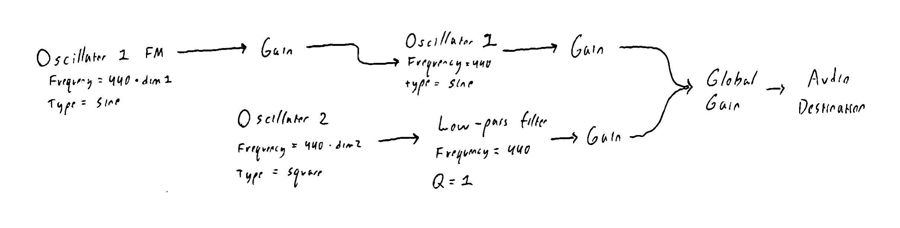

The goal of this sound was to emulate a medium sized bell or gong. The motivating ideas behind the synthesis were the following two observations: first, the initial strike of the bell produces a number of bright high-frequency overtones which quickly decay. Second, the boomier fundamental frequency continues to ring out at a wobbly tone until it slowly dissipates. To achieve the first observation, a high pitch square wave (oscillator 2) with a fast decay was used to give the initial bright burst of tones. In particular, the square wave was chosen since its fourrier analysis reveals it contains all odd integer multiples of the fundamental frequency. These many overtones recreate the tinny nature of hitting a bell. However, upon implementing the square wave, it was noticed that it can have an artificial effect on the resulting sound. To combat this, a simple low-pass filter was added to dampen the magnitude of the higher overtones and to return a naturalness to the sound.
To achieve the boomier fundamental frequency, a sine wave oscillator (oscillator 2) was added in parallel to the square wave oscillator (i.e., additive synthesis). Its envelope was modified to give it a slow exponential decay to match a ringing bell which loses a small fraction of its energy every second. Listening to bell samples, it was additionally observed that due to the rotating modes of a bell, the fundamental frequency shifts back and forth. Naturally, this could be implemented via the use of frequency modulation (oscillator 1 FM). Adjusting the envelopes of the three oscillators and the low-pass filter gave the bell sound.
On the user interface side, the grey panel functions by taking the location of a click and mapping it to two variables dim1 and dim2. These variables multiply the frequency of oscillator 1 FM and oscillator 2. Thus when the “bell” is rung, the position controls the shape and size of the bell by modifying the overtones. The white lines, revealed by clicking, indicate when dim1 and dim2 are close to integer values leading to nice consonance bells. Straying from these white lines leads to a whole world of dissonant and strange bells.